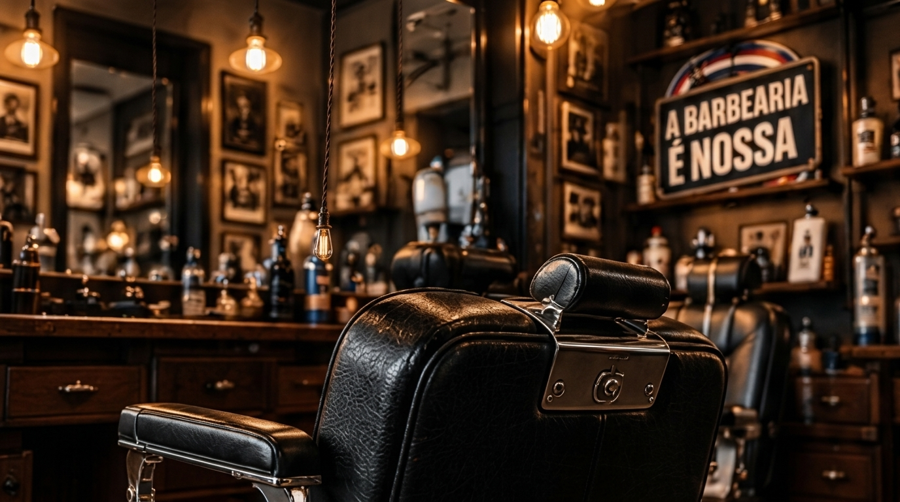

Mais de 30 Anos na Penha: A Tradição da Barbearia de Bairro na Zona da Leopoldina (RJ)

Em uma época em que negócios abrem e fecham a todo instante, permanecer por mais de 30 anos de portas abertas na Penha é a maior prova de qualidade, respeito e confiança que uma barbearia pode oferecer no Rio de Janeiro.
Mais Que um Corte, um Ponto de Encontro na Penha
Na A Barbearia É Nossa, cada cliente é chamado pelo nome. Aqui, o atendimento une o melhor de dois mundos: a hospitalidade, a boa conversa e o domínio clássico da tesoura das grandes barbearias tradicionais, somados às técnicas mais modernas de degradê, visagismo e acabamento.
Conexão com Penha, Brás de Pina e Olaria
Nossa localização na Rua Costa Rica, 21 - Loja tornou a barbearia uma referência natural para moradores de toda a região da Leopoldina. Recebemos diariamente clientes que vêm:
- Do coração da Penha e Penha Circular;
- De Brás de Pina (a poucos minutos de distância);
- De Olaria e Ramos;
- Da Vila da Penha e arredores.
Com avaliação 5.0 estrelas no Google Maps, seguimos firmes no nosso propósito: cuidar do seu visual para que você saia da cadeira renovado e confiante.
PRONTO PARA RENOVAR O VISUAL?
Agende seu horário na Penha
Rua Costa Rica, 21 - Loja · Penha, Rio de Janeiro (Próximo a Brás de Pina e Olaria)
Perguntas Frequentes sobre este tema
Qual o endereço exato da A Barbearia É Nossa na Penha?
Ficamos na Rua Costa Rica, 21 - Loja, no bairro da Penha, Rio de Janeiro - RJ (CEP 21020-410), com fácil acesso para toda a Zona da Leopoldina.
Há quanto tempo a barbearia existe na Penha?
Temos mais de 30 anos de tradição na Penha, atendendo gerações de famílias da Penha, Brás de Pina, Olaria e Vila da Penha com nota máxima no Google.
Como faço para agendar meu horário?
Basta clicar em qualquer botão de WhatsApp do site ou enviar uma mensagem para +55 (21) 97037-6847.